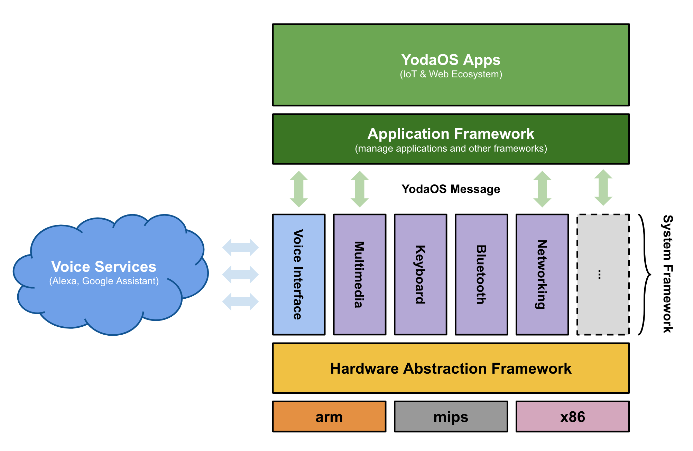

在语音交互领域，特别是像 Alexa、Homepod 等智能音箱产品的场景下，对于软硬件上的交互形态及设备成本都对于如 Android 或者 Linux 这样的操作系统提出了不同程度的挑战，而 YodaOS 则是作为第一款完全开源的语音交互操作系统应运而生。
YodaOS 包含了以下主要模块框架：
- 应用框架
- 多媒体（音频）框架
- 按键框架
- 网络框架
- 蓝牙框架
- 语音接口框架
- 硬件抽象框架
每个框架都针对性地对语音交互场景进行设计，并且通过 YodaOS Message 的方式互相通讯， 开发者只需要按照自己的需求，替换对应框架的实现，即可完成整个系统的对接，以下是 YodaOS 系统架构图：

系统主要分为3个部分：
- 硬件框架（Hardware Abstraction Framework）用于对芯片和硬件进行抽象；
- 系统框架（System Framework）基于底层的抽象接口，完成了对几大模块（网络、蓝牙、多媒体等）的场景定义，并通过 YodaOS Message 的方式与其他模块交互；
- 应用框架（Application Framework）承担了承上启下的作用，它负责定义 YodaOS Application 以及管理其安装、执行和生命周期等过程，并提供接口让应用开发者使用系统框架所提供的能力。
本书主要面向两类读者：
- 如果你想作为应用开发者，为 YodaOS 开发语音交互应用，那么可以从 开发者指北 开始。
- 如果你想深度定制，那么可以从 YodaOS Source 开始。